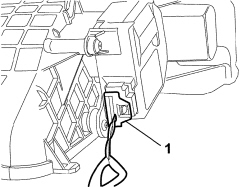
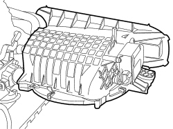
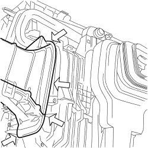

5040C18 RECIRCULATION AIR INTAKE UNIT - R.R WITH AIR CONDITIONING CASING REMOVED
- Path
- Procedures > 50 AUXILIARY UNITS > 5040 AIR CONDITIONING CASING AND COMPONENTS > 5040C AIR CONDITIONING CASING AND COMPONENTS > 5040C18 RECIRCULATION AIR INTAKE UNIT - R.R WITH AIR CONDITIONING CASING REMOVED
- Kind
- repair procedure (removal / refitting; the operation number is the code)
- Applies to
- all engines; all production periods
- Interactive page
- https://sloeber94.github.io/elrnDB-fCrm/en/#/194000616
Applies to: all engines; all production periods
 Removing
Removing
 Refitting
Refitting1. Disconnect the electrical connection from the air recirculation flap control motor.
Description | Connector | |
|---|---|---|
1 | OUTSIDE AIR/RECIRCULATION INTAKE FLAP ACTUATOR |

Applies to: all engines; all production periods
Op. 5040C34 AIR CONDITIONING FAN - R.R. WITH AIR CONDITIONING CASING REMOVED
1. Working carefully, release the recirculation air intake assembly from the climate control casing.

Applies to: all engines; all production periods
Refitting
Removing- Check that the recirculation air intake assembly is not damaged.
- Place the recirculation air intake assembly on the climate control casing.
Op. 5040C34 AIR CONDITIONING FAN - R.R. WITH AIR CONDITIONING CASING REMOVED
- Check that the air intake/fan assembly is correctly matched on the climate control casing and tighten the fixing bolts.

Applies to: all engines; all production periods
- Connect the electrical connection to the air recirculation flap control motor.
Description | Connector | |
|---|---|---|
OUTSIDE AIR/RECIRCULATION INTAKE FLAP ACTUATOR |
Topics linked from this page (2)
- 5040C34 AIR CONDITIONING FAN - R.R. WITH AIR CONDITIONING CASING REMOVED
- N082 OUTSIDE AIR/RECIRCULATION INTAKE FLAP ACTUATOR